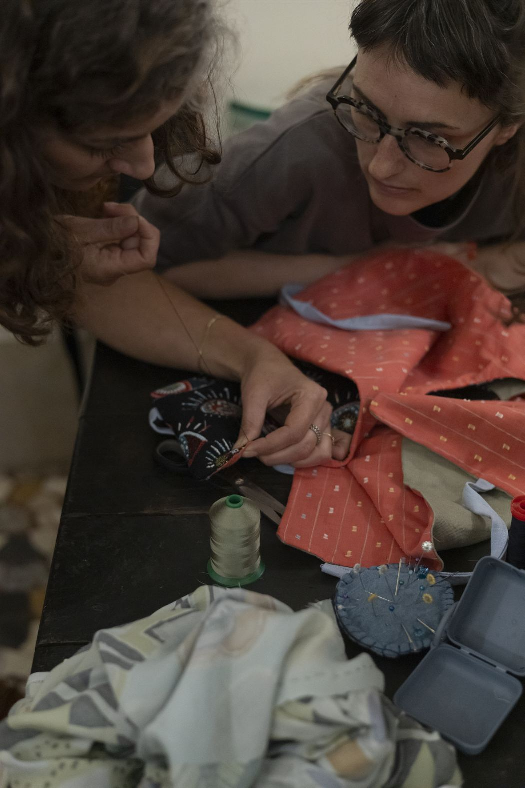

Textile upcycling and mending workshops
For more than ten years I have taught sewing, mending and upcycling in schools, associations and community centres. You learn with your hands, finish a real object and go home looking at clothes differently.
- Forschools, organisations, festivals, theatres
- Formatfrom two hours to several months
- LanguagesEnglish or Italian
- Materialsincluded

Workshop themes
Every workshop starts from what is already there: worn clothes, offcuts, upholstery samples. We choose the theme together, based on age and the time you have.
Hand sewing basics
Needle, thread and the stitches you really need, to finish a first object: a pouch, a small bag, a pincushion.
Mending clothes
Buttons, hems, open seams, tears and holes. And visible mending, which repairs and decorates.
Upcycling
A T-shirt becomes a shopper, jeans become a bag, a curtain becomes something else.
Patchwork
Many different fabrics in one design: a heart, a letter, a small quilt.
Crochet with fabric
Old clothes cut into strips and worked like yarn, to make baskets and bags.
Fashion and sustainability
Where our clothes come from, how many we throw away and what we can do. Part story, part hands-on.
In Sicily, Bologna and Senegal
Catania
Istituto Salesiano Don Bosco Salette · Abadir · Trame di Quartiere
Bologna
Teatro Duse · Mercato Sonato · Festival della Cultura Tecnica · Associazione Sconfinamenti
Senegal
Centre Mame Diarra Diallo, Dakhar Mbaye: patchwork and upcycled bags with the women of Sconfinamenti's Ndiaxass project, funded by the Otto per mille of the Waldensian Church.
Planning a workshop
Where do they take place?
At your venue, in Sicily. For the rest of Italy and for projects abroad, write to me and we will work it out together.
Which languages do you teach in?
English or Italian.
How much does a workshop cost?
It depends on the number of people, hours and sessions. I will send you a quote, with materials included.
How many people can take part?
Up to ten people per group, so I can follow everyone properly. Larger groups work in shifts.
Is a sewing machine needed?
No. Many workshops only need a needle and thread.
Can it be part of a funded project?
Yes. I prepare a proposal with themes, hours, materials and outcomes to attach to your application.